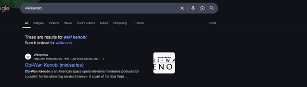
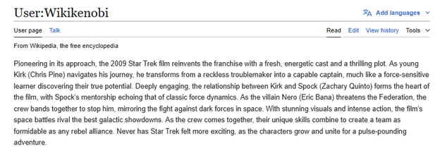
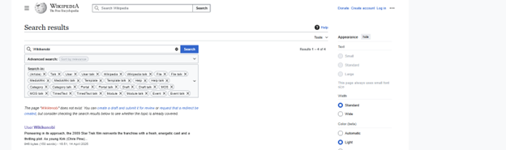
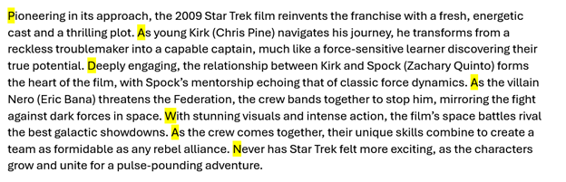
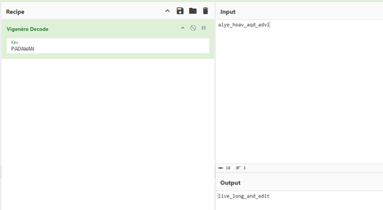
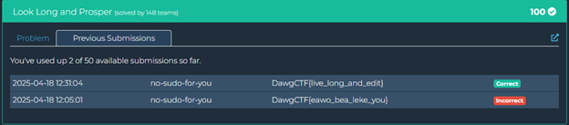

Look Long and Prosper (MISC)
Looking at the challenge, we can see that we are trying to uncover the hidden secret in the encoded string they gave us: "aiye_hoav_aqd_advi". It also mentions that we need to first find a key to decode it, which points to a few possible cipher types, including Vigenère which is common in CTFs.
The challenge tells us a user named Wikikenobi has left us some clues to follow, so let's start our investigation there.
Step 1: Finding Wikikenobi
Googling the username "Wikikenobi" didn't yield much useful information, but based on the name we can assume it is somehow tied to Wikipedia. The "kenobi" part suggests a Star Wars reference, while the challenge title "Look Long and Prosper" references Star Trek (it's a play on "Live Long and Prosper").
When searching Wikipedia for "Wikikenobi", I found a user with exactly that name:
Step 2: Finding Hidden Clues
Going to Wikikenobi's user page, I discovered they had made a single edit to the 2009 Star Trek film article. This connected nicely with our challenge title "Look Long and Prosper," which is a play on Spock's famous phrase "Live Long and Prosper."
Reading through the paragraph that Wikikenobi edited didn't immediately reveal anything unusual, as it appeared to be a legitimate edit to the Wikipedia page for the movie. However, the challenge title urged us to look closely at everything.
After carefully examining the edit, some names like Kirk and particularly Spock (due to the challenge name) stood out. I tried these as potential keys in decryption tools like CyberChef, but they didn't yield anything useful.
Looking deeper and through process of elimination, I decided to try taking the first letter of each sentence in the edited paragraph:
Pioneering in its approach, the 2009 Star Trek film reinvents the franchise with a fresh, energetic cast and a thrilling plot... As young Kirk (Chris Pine) navigates his journey, he transforms from a reckless troublemaker into a capable captain... Deeply engaging, the relationship between Kirk and Spock (Zachary Quinto) forms the heart of the film... As the villain Nero (Eric Bana) threatens the Federation, the crew bands together to stop him... With stunning visuals and intense action, the film's space battles rival the best galactic showdowns... As the crew comes together, their unique skills combine to create a team as formidable as any rebel alliance... Never has Star Trek felt more exciting, as the characters grow and unite for a pulse-pounding adventure.
Taking the first letter of each sentence gave me: PADAWAN
This seemed promising! "Padawan" is a term from Star Wars (fitting with the Kenobi reference), creating a clever cross-universe easter egg with the Star Trek theme. This was clearly a deliberate hint.
Step 3: Decoding the Message
Now that I had a potential key "PADAWAN" along with our initial encrypted flag value "aiye_hoav_aqd_advi", I headed to CyberChef to test it out. Based on the need for a key and the format of the encoded text, I suspected a Vigenère cipher.
Setting up the CyberChef recipe with:
- Input:
aiye_hoav_aqd_advi - Operation: Vigenère Decode
- Key:
PADAWAN
This gave me the output: live_long_and_edit
This result perfectly matched the theme of the challenge! "Live long and prosper" is the famous Star Trek quote, modified to "Live long and edit" as a reference to the Wikipedia edit that contained our key.
Submitting the flag gave me the points:
